http服务&ajax编程
1、服务器
前言：通俗的讲，能够提供某种服务的机器（计算机）称为服务器
1.1、服务器类型
按照不同的划分标准，服务可划分为以下类型：
- 按服务类型可分为：文件服务器、数据库服务器、邮件服务器、Web服务器等；
- 按操作系统可分为：Linux服务器、Windows服务器等；
- 按应用软件可分为 Apache服务器、Nginx 服务器、IIS服务器、Tomcat服务器、 weblogic服务器、WebSphere服务器、boss服务器、 Node服务器等；
1.2、服务器软件
使计算机具备提供某种服务能力的应用软件，称为服务器软件， 通过安装相应的服务软件，然后进行配置后就可以使计算具备了提供某种服务的能力。
常见的服务器软件有：
- 文件服务器：Server-U、FileZilla、VsFTP等（FTP是File Transfer Protocol文件传输协议）；
- 数据库服务器：oracle、mysql、SQL server、DB2、ACCESS等；
- 邮件服务器：Postfix、Sendmail等；
- HTTP服务器：Apache、Nginx、IIS、Tomcat、NodeJS等；
1.3、HTTP服务器
即网站服务器，主要提供文档(文本、图片、视频、音频)浏览服务，一般安装Apache、Nginx服务器软件。
HTTP服务器可以结合某一编程语言处理业务逻辑，由此进行的开发，通常称之为服务端开发。
常见的运行在服务端的编程语言包括 php、java、.net、Python、Ruby、Perl等。
2、客户端
具有向服务器索取服务能力的终端，如比如 手机、电脑等，通过安装不同的客户端软件， 可以获取不同的服务，比如通过QQ获得即时通讯服务、通过迅雷获得下载服务等。
常见的客户端软件：浏览器、QQ、迅雷、Foxmail等。
以浏览器为宿主环境，结合 HTML、CSS、Javascript等技术，而进行的一系列开发，通常称之为前端开发。
3、网络基础
3.1 IP地址
所谓IP地址就是给每个连接在互联网上的主机分配的一个32位地址。(就像每部手机能正常通话需要一个号码一样)
查看本机IP地址 ping、ipconfig、ifconfig（linux）
3.2、域名
由于IP地址基于数字，不方便记忆，于是便用域名来代替IP地址，域名是一个IP地址的“面具”
查看域名对应的IP地址 ping
3.3、DNS服务
DNS（Domain Name System）因特网上作为域名和IP地址相互映射的一个分布式数据库， 能够使用户更方便的访问互联网，而不用去记住能够被机器直接读取的IP数串。
简单的说就是记录IP地址和域名之间对应关系的服务。
查找优先级 本机hosts文件、DNS服务器
ipconfig /flushdns 刷新DNS
3.4、端口
端口号是计算机与外界通讯交流的出口，每个端口对应不同的服务。
现实生活中，银行不同的窗口办理不同的业务。
查看端口占用情况 netstat -an
常见端口号 80、8080、3306、21、22
4、软件架构
4.1、C/S结构
即Client、Server
C/S工作流程图
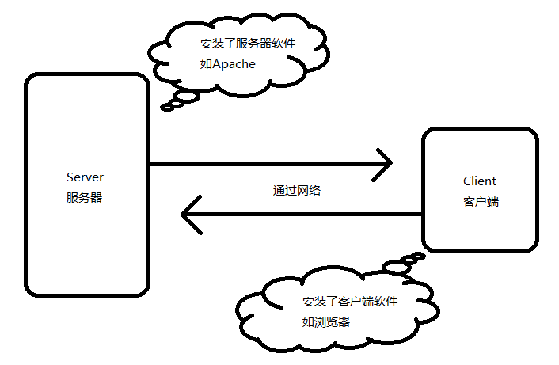
在C/S结构的情况下，不同的服务需要安装不同的客户端软件，
比如QQ、迅雷、Foxmail这种情况下安装的软件会越来越多，同时也有许多弊端，
比如A出差，需要在B电脑上查收邮件，但是B电脑并未安装Foxmail等类似的客户端软件，
这样不得不先去下载Foxmail，非常不方便。
4.2、B/S结构
B/S（即Broswer、Server）解决了C/S所带来的不便，
将所有的服务都可以通过浏览器来完成（因为基本所有浏览器都安装了浏览器），
但B/S也有一些不利，比如操作稳定性、流畅度等方面相对较弱。
5、搭建HTTP服务
Windows + Apache + Mysql + PHP，首字母组合。
5.1 安装WampServer
安装wampserver，和普通软件安装无差别，除指定安装路径外，其它默认安装。
5.2 管理HTTP服务
任务图标绿色为正常启动状态
通过图形控制台可以启动、重启、停止所有服务
或者单独启动、重启、停止特定服务
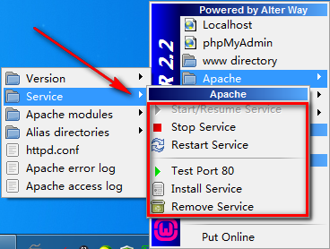
注意事项：
1、检查网络是不是通的 ping 对方IP
2、检查防火墙是否开启，如果开启将不能正常被访问
3、检查访问权限 Allow from all
4、理解默认索引
5、确保端口没有被其它程序占用
6、“#”表示注释
7、修改配置要格外小心，禁止无意修改其它内容
5.3 配置根目录
网站根目录是Web服务器上存放网站程序的空间，可通过修改配置文件自定义，如E:/www
具体步骤如下：
1、打开配置文件，控制台选择
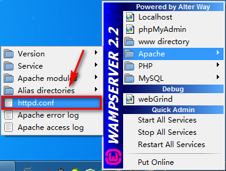
或者 wampserver安装目录下bin\apache\Apache2.2.21\conf\httpd.conf
2、设定根目录，查找并修改
例如：
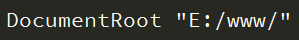
这样就指定了 "E:/www/"为存放网站的根目录。
3、配置根目录，查找
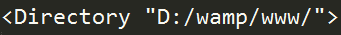
修改成
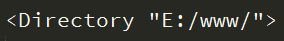
4、修改完后，并不能立即生效，需要 重启Apache
注：可以指定任意目录为根目录
5.4 网站部署
将我们制作好的网页拷贝到配置好的根目录下，浏览器访问127.0.0.1即可。
5.5配置虚拟主机
在一台Web服务器上，我们可以通过配置虚拟主机，然后分别设定根目录，实现对多个网站的管理。
具体步骤如下：
1、开启虚拟主机辅配置，在httpd.conf 中找到
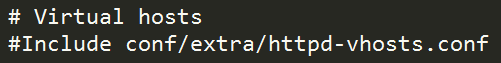
去掉前面的#号注释，开启虚拟主机配置
2、配置虚拟主机，打开conf/extra/httpd-vhosts.conf
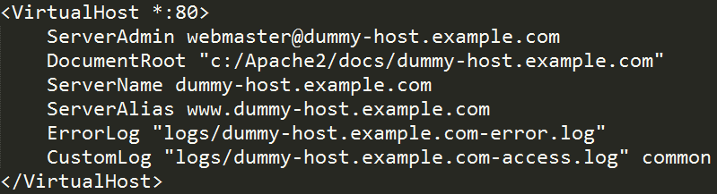
分别修改以下三项
DocumentRoot "E:/www/example"
ServerName "example.com "
ServerAlias "www.example.com"
其它项无需指定。
3、修改DNS（hosts）文件
打开C:\Windows\System32\drivers\etc\hosts
目录是固定的

注：修改hosts文件权限
4、重启Apache
5、浏览器访问www.example.com
6、PHP基础
文件以.php后缀结尾，所有程序包含在<?php 这里是代码 ?>
避免使用中文目录和中文文件名 php页面无法直接打开需要运行在服务器环境当中
6.1、最简单的php程序
<?php
// 用来指定编码集
header('Content-Type:text/html; charset=utf-8');
/*这是一个最简单的php程序*/
echo 'hello world!';
?>
6.3、变量
1、变量以$开头 字母/数字/下划线 不能以数字开头
2、大小写敏感（区分大小写）
// 声明一个变量$a并赋值为10
$a = 10;
// 输出一个变量$a
echo $a;
// 声明一个变量$b并赋值为10
$b = 10;
// 输出一个变量$b
echo $b;
// 输出顺序是自上向下的
// 相当于 js dcoument.write()
6.3、数据类型
字符型
$str = 'hello world!';
整型
$num = 10;
浮点型
$float = 10.5;
布尔型
$bool = true;
数组
// Javascript 数组定义方式 var arr = [1, 2, 3]
// arr[0]、arr[1]、arr[1]
// PHP 是这样定义数组的
// 这种方式叫做**索引数组**
$arr = array(1, 2, 3);
// echo $arr[0];
// echo $arr[2];
// 定义方式和Javascript有区别，但是访问方式是一样的
// var obj = {name: itcast, age: 10}
// PHP另一种定定数组的方式，所表达的意义和Javascript一样，
// 只是语法格式不一样
// 这种方式叫做**关联数组**
$arr1 = array('name'=>'itcast', 'age'=>10);
// echo $arr1['name'];
// echo $arr1['age'];
对象
// Javascript var obj = {name: itcast, age: 10}
// PHP需要先创建一个类，下面就是创建过程
class Person {
public $name = 'itcast';
public $age = 10;
}
$person = new Person;
// PHP访问一个对象属性的语法是不一样的
echo $person->name;
// obj['name']; obj.name 不行
NULL
//PHP中一种特殊的数据类型，表示空值，即表示没有为该变量设置任何值null(空值)不区分大小写，null和NULL是一样的。
单引号&双引号区别： 单引号内部的变量不会执行双引号会执行
$name = '小明';
echo 'name is $name';//输出 name is $name
echo '<br>';
echo "name is $name";//输出 name is 小明
索引数组、关联数组（了解即可）
6.4、运算符&内容输出
基本与Javascript语法一致
. 号表示字符串拼接符，Javascript中为+号
echo：输出简单数据类型，如字符串、数值
/**
* 连接符
* Javascript中用+号表示连接符
* PHP中使用.点号
*/
$hello = 'hello';
$world = 'world!';
// PHP连接符用.号
echo $hello . ' ' .$world;
print_r()：输出复杂数据类型，如数组
$arr = array('itcast', '今年', '10岁了');
// 只能输出简单类型
echo $arr;
// 可以打印数组，但是输出的是一个数组的结构
print_r($arr);
var_dump()：输出详细信息，如对象、数组（了解）
$arr = array('itcast', '今年', '10岁了');
// 只能输出简单类型
echo $arr;
// 输出详细信息
var_dump($arr);
$hello = 'hello';
// 输出详细信息
var_dump($hello);
6.5、函数
基本与Javascript基本一致
函数名对大小写不敏感
默认参数（了解即可）
// 1、PHP中函数不可以省略参数
// 2、PHP可以设置默认参数
function sayHello($name='web developer') {
echo $name . '你好!';
}
sayHello();
6.6、分支，循环语句
/**
* 分支控制语句、循环语句
* 与Javascript一样
* foreach 数组遍历函数，类似Javascript中的 for in
*/
$name = 'itcast1';
if($name == 'itcast') {
echo '我已经在' . $name . '学习';
} else {
echo '我还没有学习过编程';
}
/**
* 分支控制语句、循环语句
* 与Javascript一样
* foreach 数组遍历函数，类似Javascript中的 for in
*/
// 索引数组
$arr = array('itcast', '今年', '10岁了');
// PHP函数，计算数组的长度
$length = count($arr);
// echo $length;
// 和Javascript是一样的
// for($i=0; $i<$length; $i++) {
// echo $arr[$i];
// }
foreach($arr as $k=>$v) {
echo $k . '~~~' . $v;
};
// 关联数组
$arr1 = array('name'=>'itcast', 'age'=>'10');
// 验证关联数组不可以按索引下标来访问
// echo $arr1[0];
//PHP遍历一个关联数组
foreach($arr1 as $key=>$val) {
echo $key . '~~~' . $val;
}
// 实际开发都是用foreach来遍历数组的
6.7、表单处理
表单name属性的是用来提供给服务端接收所传递数据而设置的
表单action属性设置接收数据的处理程序
表单method属性设置发送数据的方式
当上传文件是需要设置 enctype="multipart/form-data"，且只能post方式
$_GET接收 get 传值
$_POST接收 post 传值
$_FILES接收文件上传
move_uploaded_file($_FILES['image']['tmp_name'], 'test.jpg');
<form action="login.php" method="post">
<div class="row">
<label>用户：</label><input type="text" name="username"/>
</div>
<div class="row">
<label>密码：</label><input type="password" name="password"/>
</div>
<div class="row">
<input type="submit" value="登录"/>
</div>
</form>
<form action="login.php" method="post" enctype="multipart/form-data">
<div class="row">
<label>图片：</label><input type="file" name="image"/>
</div>
<div class="row">
<input type="submit" value="上传"/>
</div>
</form>
6.8、文件导入&&常用php函数
include '07.form.html';
require '07.form.php'
$array = array(
'username'=>'itcast',
'password'=>'123456'
);
echo '获取数组的长度：'.count($array);
echo '<br>';
echo '判断是否在数组中：'.in_array('itcast',$array);
echo '<br>';
echo '检测数组中是否存在key：'.array_key_exists('username',$array);
echo '<br>';
6.9、应用实例
1、用户登录
<form action="login.php" method="post">
<div class="row">
<label>用户：</label><input type="text" name="username"/>
</div>
<div class="row">
<label>密码：</label><input type="password" name="password"/>
</div>
<div class="row">
<input type="submit" value="登录"/>
</div>
</form>
<?php
header('Content-Type:text/html; charset=utf-8');
/*数据库当中的数据*/
$userInfo = array(
'username'=>'itcast',
'password'=>'123456'
);
/*拿到提交过来的数据*/
$username = $_POST['username'];
$password = $_POST['password'];
/*去匹配数据库当中的数据*/
if($userInfo['username'] == $username && $userInfo['password'] == $password){
header('refresh:0;url=jdMsite/');
}else{
header('refresh:0;url=login.html');
}
?>
2、动态网站
京东首页
<?php
header('Content-Type:text/html; charset=utf-8');
$product_list = array(
array(
'imgUrl'=>'images/detail01.jpg',
'newPrice'=>'15.00',
'oldPrice'=>'19.00'
),
array(
'imgUrl'=>'images/detail02.jpg',
'newPrice'=>'133.00',
'oldPrice'=>'234.00'
),
array(
'imgUrl'=>'images/detail01.jpg',
'newPrice'=>'340.00',
'oldPrice'=>'1432.00'
)
);
include 'index.html';
?>
<!--掌上秒杀的内容是会更新的而且是后台更新-->
<ul class="sk_product">
<?php foreach($product_list as $key => $val){ ?>
<li>
<a href="#"><img src="<?php echo $val['imgUrl'] ?>" alt=""/></a>
<p class="new_price">¥<?php echo $val['newPrice'] ?></p>
<p class="old_price">¥<?php echo $val['oldPrice'] ?></p>
</li>
<?php } ?>
</ul>
京东分类
<?php
header('Content-Type:text/html; charset=utf-8');
$category = array(
'热门推荐',
'潮流女装',
'品牌男装',
'内衣配饰',
'家用电器',
'电脑办公',
'手机数码',
'母婴频道',
'图书',
'家居家纺',
'居家生活',
'家具建材',
'热门推荐',
'潮流女装',
'品牌男装',
'内衣配饰',
'家用电器',
'电脑办公',
'手机数码',
'母婴频道',
'居家生活',
'手机数码',
'母婴频道',
'图书',
'家居家纺',
'居家生活',
'潮流女装',
'家具建材',
'热门推荐',
'潮流女装',
);
//echo count($category);
include 'category.html';
?>
<!--左侧分类-->
<div class="jd_cate_left">
<ul>
<?php foreach($category as $key=>$val){ ?>
<li class="<?php echo $key==1?'now':'' ?>"><a href="javascript:;"><?php echo $val ?></a></li>
<?php } ?>
</ul>
</div>
7、网络传输协议
7.1、常见协议
1、HTTP、HTTPS 超文本传输协议
2、FTP 文件传输协议
3、SMTP 简单邮件传输协议
7.2、http协议
超文本传输协议（HTTP，HyperText Transfer Protocol) 网站是基于HTTP协议的， 例如网站的图片、CSS、JS等都是基于HTTP协议进行传输的。
HTML Hypertext Markup Language
HTTP协议是由从客户机到服务器的请求(Request)和从服务器到客户机的响应(Response)进行了约束和规范。
即HTTP协议主要由请求和响应构成。
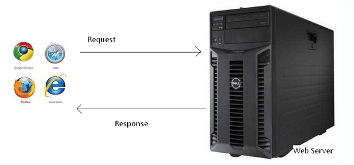
常用请求方法 POST、GET、PUT、DELETE
我们通过浏览器插件 FireFox httpFox 调试。ctrl shift f2 调用
7.2.1、请求和请求报文
请求由客户端发起，其规范格式为：请求行、请求头、请求主体。
- 1、请求行
由请求方式、请求URL和协议版本构成
GET /day01/code/login.php?username=123&password=123 HTTP/1.1
POST /day01/code/login.php HTTP/1.1
- 2、请求头
Host：localhost请求的主机
Cache-Control：max-age=0控制缓存
Accept：/ 接受的文档MIME类型
User-Agent：很重要
Referer：从哪个URL跳转过来的
Accept-Encoding：可接受的压缩格式
If-None-Match：记录服务器响应的ETag值，用于控制缓存
此值是由服务器自动生成的
If-Modified-Since：记录服务器响应的Last-Modified值
此值是由服务器自动生成的
- 3、请求主体
即传递给服务端的数据
注：当以post形式提交表单的时候，请求头里会设置
Content-Type: application/x-www-form-urlencoded，以get形式当不需要
7.2.2、 响应和响应报文
响应由服务器发出，其规范格式为：状态行、响应头、响应主体。
- 1、状态行
由协议版本号、状态码和状态信息构成 HTTP/1.1 200 OK
- 2、响应头
Date：响应时间
Server：服务器信息
Last-Modified：资源最后修改时间 由服务器自动生成
ETag：资源修改后生成的唯一标识
由服务器自动生成
Content-Length：响应主体长度
Content-Type：响应资源的类型
- 3、响应主体
即服务端返回给客户端的内容；
- 状态码
常见的有200代表成功、304文档未修改、403没有权限、404未找到、500服务器错误
 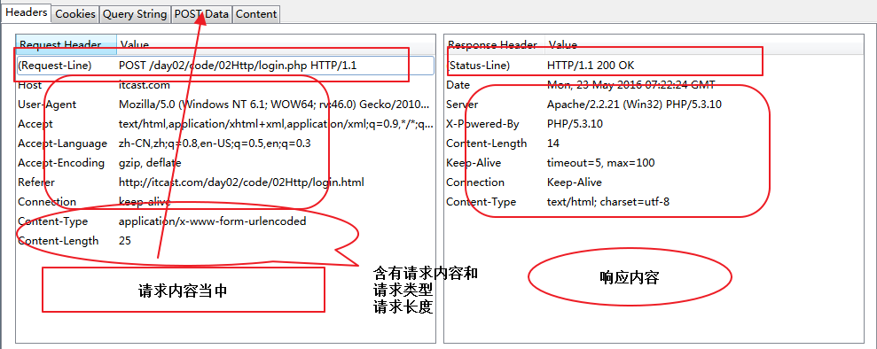
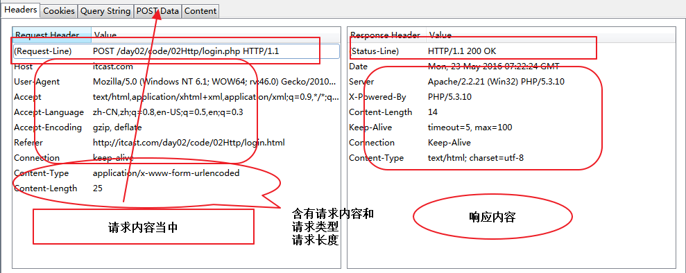
8、AJAX编程
即 Asynchronous [e'sɪŋkrənəs] Javascript And XML， AJAX 不是一门的新的语言，而是对现有技术的综合利用。 本质是在HTTP协议的基础上以异步的方式与服务器进行通信。
8.1、 异步
指某段程序执行时不会阻塞其它程序执行，其表现形式为程序的执行顺序不依赖程序本身的书写顺序，相反则为同步。
其优势在于不阻塞程序的执行，从而提升整体执行效率。
XMLHttpRequest可以以异步方式的处理程序。
8.2、 XMLHttpRequest
浏览器内建对象，用于在后台与服务器通信(交换数据) ， 由此我们便可实现对网页的部分更新，而不是刷新整个页面。
/*js 内置的 http 请求对象 XMLHttpRequest*/
/*1.怎么使用 这个内置对象*/
var xhr = new XMLHttpRequest;
/*2.怎么样去组请求*/
/*请求的行*/
xhr.open('post','01.php');
/*请求头*/
//get 没有必要设置
//post 必须设置 Content-Type: application/x-www-form-urlencoded
xhr.setRequestHeader('Content-Type','application/x-www-form-urlencoded');
/*请内容*/
/*3.发送请求*/
xhr.send("name=xjj&age=10");
8.2.1、请求
HTTP请求3个组成部分与XMLHttpRequest方法的对应关系
1、请求行
xhr.open('post','01.php');
2、请求头
xhr.setRequestHeader('Content-Type','application/x-www-form-urlencoded');
get请求可以不设置
3、请求主体
xhr.send("name=xjj&age=10");
get可以传空
注意书写顺序
8.2.2、响应
HTTP响应是由服务端发出的，作为客户端更应关心的是响应的结果。
HTTP响应3个组成部分与XMLHttpRequest方法或属性的对应关系。
由于服务器做出响应需要时间（比如网速慢等原因），所以我们需要监听服务器响应的状态，然后才能进行处理。
if(xhr.readyState == 4 && xhr.status == 200){
console.log('ok');
console.log(xhr.responseText);
/*把内容渲染在页面当中*/
document.querySelector('#result').innerHTML = xhr.responseText;
}
**readyState**
0：请求未初始化（还没有调用 open()）。
1：请求已经建立，但是还没有发送（还没有调用 send()）。
2：请求已发送，正在处理中（通常现在可以从响应中获取内容头）。
3：请求在处理中；通常响应中已有部分数据可用了，但是服务器还没有完成响应的生成。
4：响应已完成；您可以获取并使用服务器的响应了。
onreadystatechange是Javascript的事件的一种，其意义在于监听XMLHttpRequest的状态
1、获取状态行（包括状态码&状态信息）
xhr.status 状态码
xhr.statusText 状态码信息
2、获取响应头
xhr.getResponseHeader('Content-Type');
xhr.getAllResponseHeaders();
3、响应主体
xhr.responseText
xhr.responseXML
我们需要检测并判断响应头的MIME类型后确定使用request.responseText或者request.responseXML
8.3.3、API详解
xhr.open() 发起请求，可以是get、post方式
xhr.setRequestHeader() 设置请求头
xhr.send() 发送请求主体get方式使用xhr.send(null)
xhr.onreadystatechange = function () {} 监听响应状态
xhr.status表示响应码，如200
xhr.statusText表示响应信息，如OK
xhr.getAllResponseHeaders() 获取全部响应头信息
xhr.getResponseHeader('key') 获取指定头信息
xhr.responseText、xhr.responseXML都表示响应主体
注：GET和POST请求方式的差异（面试题）
1、GET没有请求主体，使用xhr.send(null)
2、GET可以通过在请求URL上添加请求参数
3、POST可以通过xhr.send('name=itcast&age=10')
4、POST需要设置
5、GET效率更好（应用多）
6、GET大小限制约4K，POST则没有限制
问题？如何获取复杂数据呢？
8.3、 XML
1、必须有一个根元素
2、不可有空格、不可以数字或.开头、大小写敏感
3、不可交叉嵌套
4、属性双引号（浏览器自动修正成双引号了）
5、特殊符号要使用实体
6、注释和HTML一样
虽然可以描述和传输复杂数据，但是其解析过于复杂并且体积较大，所以实现开发已经很少使用了。
<?xml version="1.0" encoding="UTF-8"?>
<root>
<arrayList>
<array>
<src>images/banner.jpg</src>
<newPirce>12.00</newPirce>
<oldPrice>30.00</oldPrice>
</array>
<array>
<src>images/banner.jpg</src>
<newPirce>12.00</newPirce>
<oldPrice>30.00</oldPrice>
</array>
</arrayList>
</root>
<?php
header('Content-Type:text/xml;charset=utf-8');
/*以xml格式传输数据的时候要求响应内容格式是 text/xml*/
/*file_get_contents 获取文件内容*/
$xml = file_get_contents('01.xml');
/*输出xml内容*/
echo $xml;
?>
var xhr = new XMLHttpRequest;
xhr.open('get','01.php');
xhr.send(null);
xhr.onreadystatechange = function(){
if(xhr.status == 200 && xhr.readyState == 4){
/*获取到XML格式内容 放回的是DOM对象 document*/
var xml = xhr.responseXML;
/*通过选着器可以获取到xml的数据*/
console.log(xml.querySelectorAll('array')[0].querySelector('src').innerHTML);
}
}
8.4、 JSON
即 JavaScript Object Notation，另一种轻量级的文本数据交换格式，独立于语言。
1、数据在名称/值对中
2、数据由逗号分隔(最后一个健/值对不能带逗号)
3、花括号保存对象方括号保存数组
4、使用双引号
[
{"src":"images/detail01.jpg","oldPrice":"10.12","newPrice":"130.00"},
{"src":"images/detail02.jpg","oldPrice":"1.00","newPrice":"11.00"},
{"src":"images/detail03.jpg","oldPrice":"100.00","newPrice":"1000.00"}
]
JSON数据在不同语言进行传输时，类型为字符串，不同的语言各自也都对应有解析方法，需要解析完成后才能读取
1、PHP解析方法
json_encode()、json_decode()
<?php
header('Content-Type:text/html;charset=utf-8');
/*以json格式传输数据的时候要求响应内容格式是 application/json*/
/*注意也可以不设置 但是这遵循的一个规范*/
/*file_get_contents 获取文件内容*/
$json = file_get_contents('01.json');
/*输出json内容*/
echo $json;
echo '<br><br>';
$array = array(
array('src'=>'images/detail01.jpg','newPrice'=>'12.00','oldPrice'=>'455.00'),
array('src'=>'images/detail02.jpg','newPrice'=>'65.00','oldPrice'=>'878.00'),
array( 'src'=>'images/detail01.jpg','newPrice'=>'100.00','oldPrice'=>'1000.00')
);
/*将php数组转化成json字符*/
$json_array = json_encode($array);
echo $json_array;
echo '<br><br>';
/*将json字符转化成php数组*/
$array_json = json_decode($json_array);
echo $array_json;
echo '<br><br>';
?>
1、Javascript 解析方法
JSON对象 JSON.parse()、JSON.stringify()；
JSON兼容处理json2.js
总结：JSON体积小、解析方便且高效，在实际开发成为首选。
var xhr = new XMLHttpRequest;
xhr.open('get','01.php');
xhr.send(null);
xhr.onreadystatechange = function(){
if(xhr.status == 200 && xhr.readyState == 4){
/*获取仅仅是字符串*/
var text = xhr.responseText;
/*需要把字符串转化成JSON对象*/
var json_obj = JSON.parse(text);
console.log(json_obj);
/*我们也可以把JSON对象转化成字符串*/
var json_str = JSON.stringify(json_obj);
console.log(json_str);
}
}
8.5、 兼容性
关于IE的兼容方面，了解即可。
function XHR() {
var xhr;
try {
xhr = new XMLHttpRequest();
}
/*如果 try内的程序运行错误 抛出异常 捕捉异常 上面程序当中运行的错误*/
catch(e) {
/*在不同的IE版本下初始 ActiveXObject 需要传入的标识*/
var IEXHRVers =["Msxml3.XMLHTTP","Msxml2.XMLHTTP","Microsoft.XMLHTTP"];
for (var i=0;i<IEXHRVers.length;i++) {
try {
xhr = new ActiveXObject(IEXHRVers[i]);
}
catch(e) {
/*如果出现错误的时候 停止当次的循环*/
continue;
}
}
}
return xhr;
}
8.6、 封装ajax工具函数
/**
* ITCAST WEB
* Created by zhousg on 2016/5/24.
*/
/*
* 1. 请求的类型 type get post
* 2. 请求地址 url
* 3. 是异步的还是同步的 async false true
* 4. 请求内容的格式 contentType
* 5. 传输的数据 data json对象
*
* 6.响应成功处理函数 success function
* 7.响应失败的处理函数 error function
*
* 这些都是动态参数 参数对象 options
* */
/*封装一个函数*/
window.$ = {};
/*申明一个ajax的方法*/
$.ajax = function(options){
if(!options || typeof options != 'object'){
return false;
}
/*请求的类型*/
var type = options.type || 'get';/*默认get*/
/*请求地址 */
var url = options.url || location.pathname;/*当前的地址*/
/*是异步的还是同步的 */
var async = (options.async === false)?false:true;/*默认异步*/
/*请求内容的格式 */
var contentType = options.contentType || "text/html";
/*传输的数据 */
var data = options.data || {};/*｛name:'',age:''｝*/
/*在提交的时候需要转成 name=xjj 这种格式*/
var dataStr = ''/*数据字符串*/
for(var key in data){
dataStr += key+'='+data[key]+'&';
}
dataStr = dataStr && dataStr.slice(0,-1);
/*ajax 编程*/
var xhr = new XMLHttpRequest();
/*请求行*/
/*(type=='get'?url+'?'+dataStr:url)判断当前的请求类型*/
xhr.open(type,(type=='get'?url+'?'+dataStr:url),async);
/*请求头*/
if(type == 'post'){
xhr.setRequestHeader('Content-Type','application/x-www-form-urlencoded');
}
/*请求主体*/
/*需要判断请求类型*/
xhr.send(type=='get'?null:dataStr);
/*监听响应状态的改变 响应状态*/
xhr.onreadystatechange = function(){
/*请求响应完成并且成功*/
if(xhr.readyState == 4 && xhr.status == 200){
/*success*/
var data = '';
var contentType = xhr.getResponseHeader('Content-Type');
/*如果我们服务器返回的是xml*/
if(contentType.indexOf('xml') > -1){
data = xhr.responseXML;
}
/*如果我们的服务器返回的是json字符串*/
else if(contentType.indexOf('json') > -1){
/*转化json对象*/
data = JSON.parse(xhr.responseText);
}
/*否则的话他就是字符串*/
else{
data = xhr.responseText;
}
/*回调 成功处理函数*/
options.success && options.success(data);
}
/*计时请求xhr.status不成功 他也需要的响应完成才认作是一个错误的请求*/
else if(xhr.readyState == 4){
/*error*/
options.error && options.error('you request fail !');
}
}
}
$.post = function(options){
options.type = 'post';
$.ajax(options);
}
$.get = function(options){
options.type = 'get';
$.ajax(options);
}
8.7、 jquery的ajax
- jQuery为我们提供了更强大的Ajax封装
- $.ajax({}) 可配置方式发起Ajax请求
- $.get() 以GET方式发起Ajax请求
- $.post() 以POST方式发起Ajax请求
- $('form').serialize() 序列化表单（即格式化key=val&key=val）
- url 接口地址
- type 请求方式
- timeout 请求超时
- dataType 服务器返回格式
- data 发送请求数据
- beforeSend: function () {} 请求发起前调用
- success 成功响应后调用
- error 错误响应时调用
- complete 响应完成时调用（包括成功和失败）
- jQuery Ajax介绍
- http://www.w3school.com.cn/jquery/jquery_ref_ajax.asp
8.8、 案例练习
1、Loading状态
2、禁止重复提交
3、表单处理
4、数据验证
接口化开发
请求地址即所谓的接口，通常我们所说的接口化开发，其实是指一个接口对应一个功能，
并且严格约束了请求参数和响应结果的格式，这样前后端在开发过程中，可以减少不必要的讨论，
从而并行开发，可以极大的提升开发效率，另外一个好处，当网站进行改版后，服务端接口只需要进行微调。
具体参考代码
9、模版引擎
9.2、 artTemplate 简介语法模板
<script src="dist/template.js"></script>
下载(https://raw.github.com/aui/artTemplate/master/dist/template.js)
编写模版
<script id="test" type="text/html">
<h1>{{title}}</h1>
<ul>
{{each list as value i}}
<li>索引 {{i + 1}} ：{{value}}</li>
{{/each}}
</ul>
</script>
渲染数据
var data = {
title: '标签',
list: ['文艺', '博客', '摄影', '电影', '民谣', '旅行', '吉他']
};
var html = template('test', data);
document.getElementById('content').innerHTML = html;
简介语法
{{if admin}}
{{include 'admin_content'}}
{{each list}}
<div>{{$index}}. {{$value.user}}</div>
{{/each}}
{{/if}}
9.1、 artTemplate 原生 js 模板语法版
使用
在页面中引用模板引擎：
<script src="dist/template-native.js"></script>
下载(https://raw.github.com/aui/artTemplate/master/dist/template-native.js)
表达式
<% 与 %> 符号包裹起来的语句则为模板的逻辑表达式。
输出表达式
对内容编码输出：
<%=content%>
不编码输出：
<%=#content%>
编码可以防止数据中含有 HTML 字符串，避免引起 XSS 攻击。
逻辑
支持使用 js 原生语法
<h1><%=title%></h1>
<ul>
<%for(i = 0; i < list.length; i ++) {%>
<li>条目内容 <%=i + 1%> ：<%=list[i]%></li>
<%}%>
</ul>
模板不能访问全局对象，公用的方法请参见文档 辅助方法 章节 模板包含表达式
用于嵌入子模板。
<% include('template_name') %>
子模板默认共享当前数据，亦可以指定数据：
<% include('template_name', news_list) %>
辅助方法
使用template.helper(name, callback)注册公用辅助方法，例如一个基本的 UBB 替换方法：
template.helper('$ubb2html', function (content) {
// 处理字符串...
return content;
});
模板中使用的方式：
<% $ubb2html(content) %>
10、同源&跨域
####10.1 同源
同源策略是浏览器的一种安全策略，所谓同源是指，域名，协议，端口完全相同。
####10.2 跨域
不同源则跨域 例如http://www.example.com/
http://api.example.com/detail.html 不同源 域名不同
https//www.example.com/detail.html 不同源 协议不同
http://www.example.com:8080/detail.html 不同源 端口不同
http://api.example.com:8080/detail.html 不同源 域名、端口不同
https://api.example.com/detail.html 不同源 协议、域名不同
https://www.example.com:8080/detail.html 不同源 端口、协议不同
http://www.example.com/detail/index.html 同源 只是目录不同
####10.3 跨域方案（课外拓展）
1、顶级域名相同的可以通过domain.name来解决，即同时设置 domain.name = 顶级域名（如example.com）
2、document.domain + iframe
3、window.name + iframe
4、location.hash + iframe
5、window.postMessage()
参考资料 http://rickgray.me/2015/09/03/solutions-to-cross-domain-in-browser.html
10.4、 jsonp
JSON with Padding
1、原理剖析
其本质是利用了标签具有可跨域的特性， 由服务端返回一个预先定义好的Javascript函数的调用，并且将服务器数据以该函数参数的形式传递过来， 此方法需要前后端配合完成。
<!--
当我们用script标签去加载的时候 会把内容解析成js去执行
-->
<script>
function fuc(data){
console.log(data.name);
}
</script>
<script src="http://www.guangzhou.com/api.php?callback=fuc"></script>
11、综合案例
11.1、瀑布流案例（必须掌握）
11.2、天气接口（必须掌握）
接口地址 http://developer.baidu.com/map/carapi-7.htm
url: 'http://api.map.baidu.com/telematics/v3/weather?output=json&ak=0A5bc3c4fb543c8f9bc54b77bc155724',